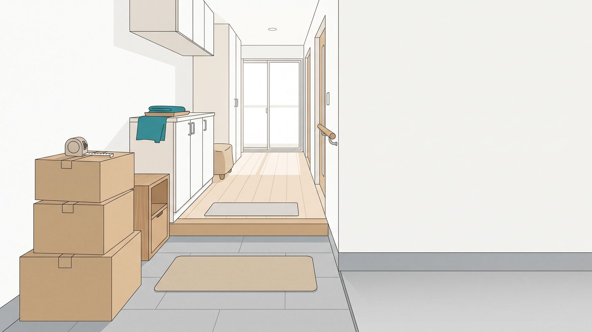
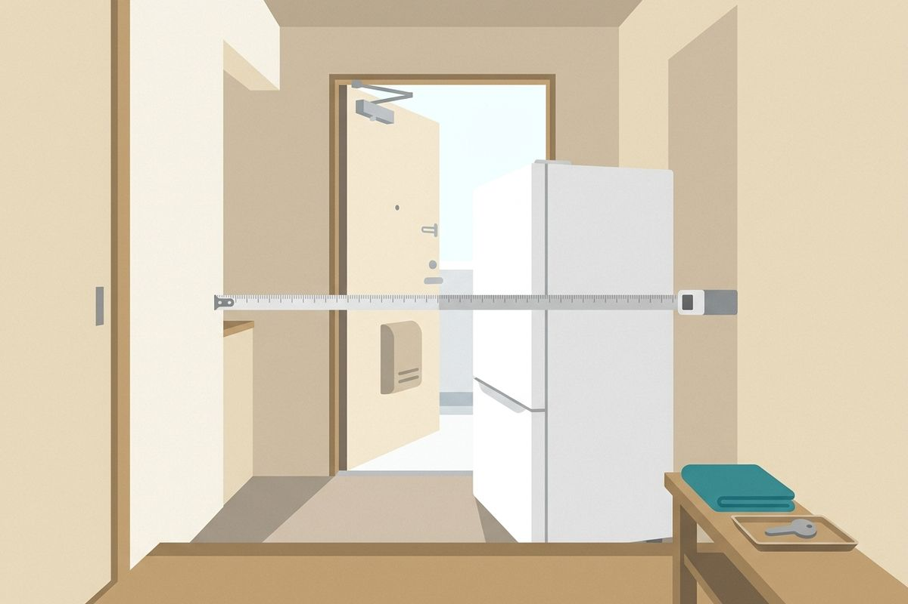
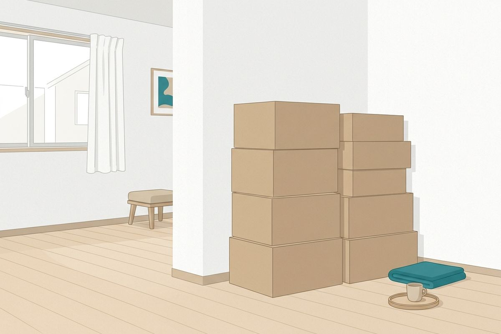
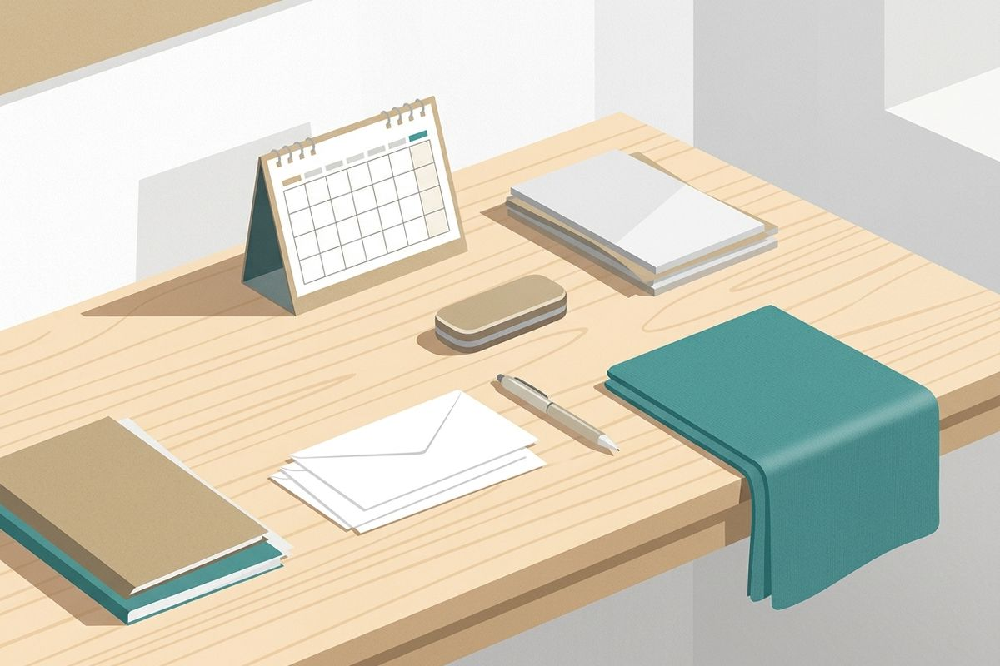
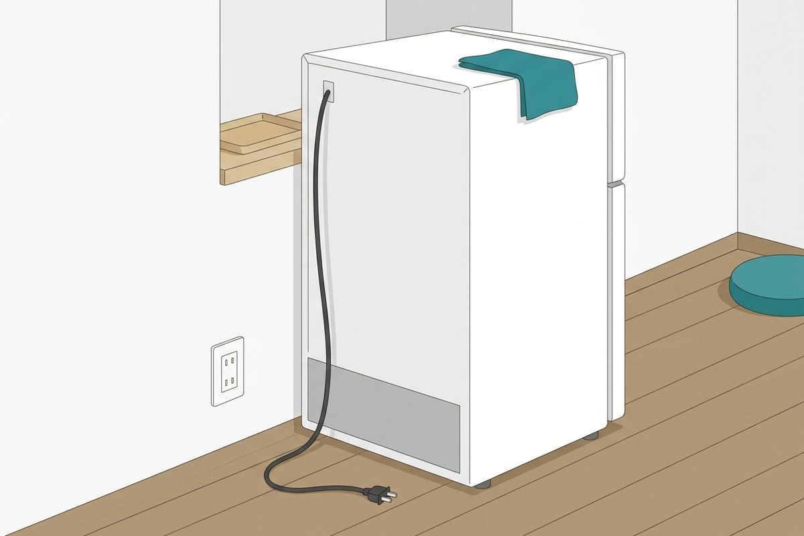

引っ越しの流れで探す
- 引っ越しが決まったら荷物の量から、トラックの大きさを出す
- 1か月前〜前日引っ越し1か月前〜前日の手続きと準備
- 当日引っ越し当日にすること
- 引っ越しの後引っ越し後14日以内の手続き
数字で確かめるページ20本
一覧 →



このサイトの数字
- 135機種冷蔵庫・洗濯機の寸法。メーカー公式の仕様から
- 20品目家具・箱の寸法。出品データの中央値
- 20本引っ越しを確かめるページ。全部に出典と更新日
数字はメーカー・引っ越し会社・法令の公開ページと、出品データの集計から。各ページに出典と更新日を書き、費用の金額は出しません。データと判定の決め方 →
全ページの一覧（20本）
トラックに何が載るか
- 単身向けボックスに段ボールは何箱載る？目安は1本約18〜20箱・2本約35〜41箱
- 2トン車に段ボールは何箱載る？目安は約52〜104箱
- 2トンロング車に段ボールは何箱載る？目安は約104〜156箱
- 4トンロング車に段ボールは何箱載る？目安は約208〜260箱
搬入経路
- 幅60cmの冷蔵庫を運ぶのに要る、玄関・廊下・曲がり角の幅
- 幅65cmの冷蔵庫を運ぶのに要る、玄関・廊下・曲がり角の幅
- 幅70cmの冷蔵庫を運ぶのに要る、玄関・廊下・曲がり角の幅
- ドラム式洗濯機を運ぶのに要る、玄関・廊下の幅
- 2人掛けソファを運ぶのに要る、玄関・廊下・曲がり角の幅
- マットレスを運ぶときに要る、廊下と曲がり角の幅
荷物量の目安
手続きと期限
大型家電の扱い